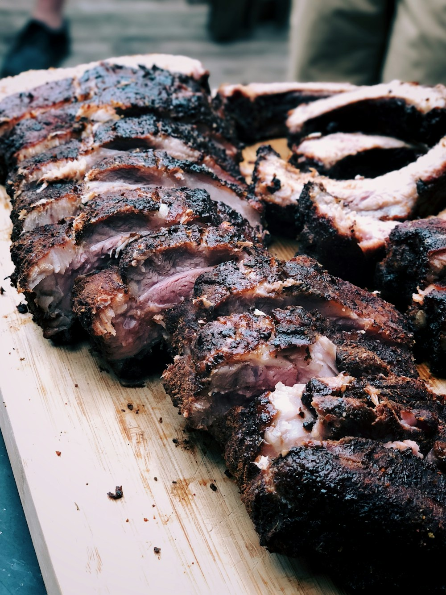
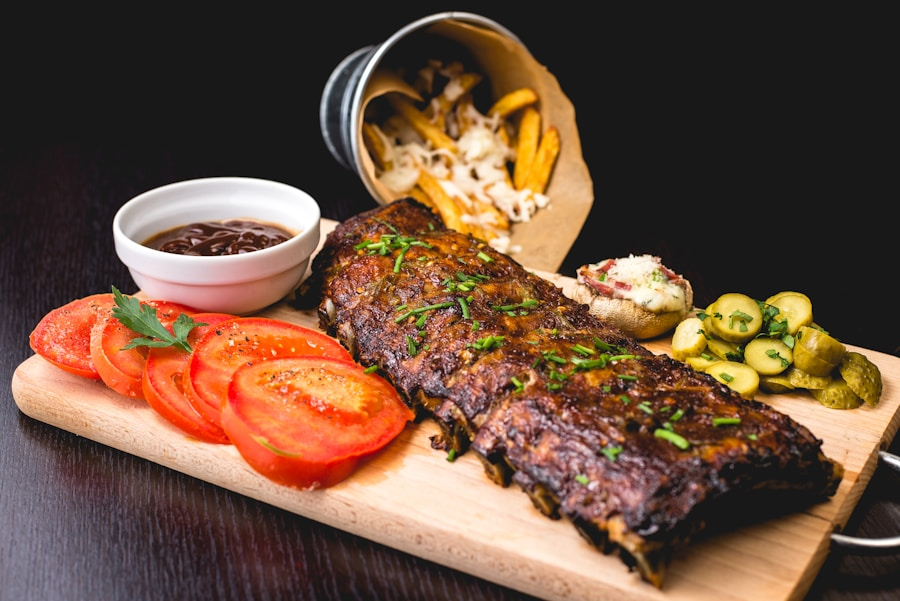
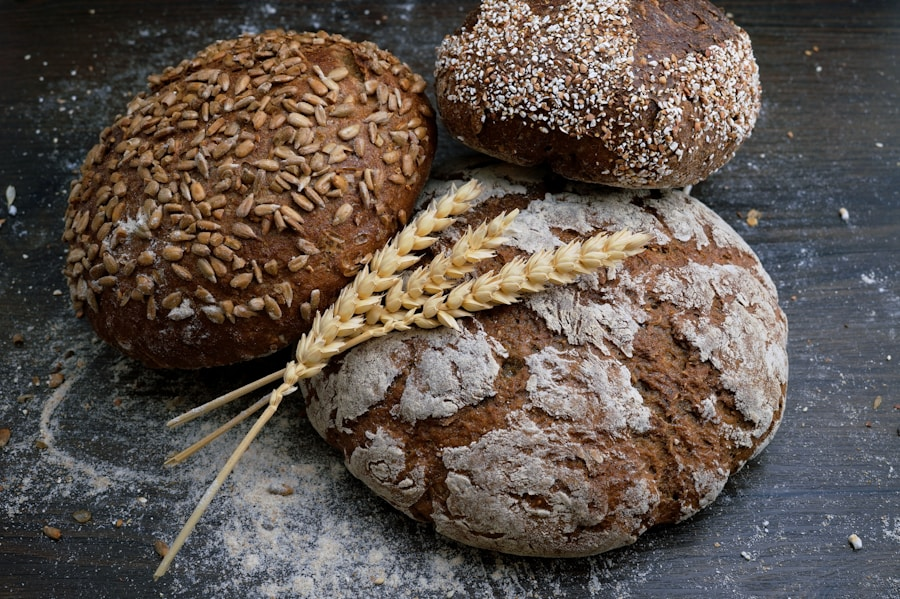
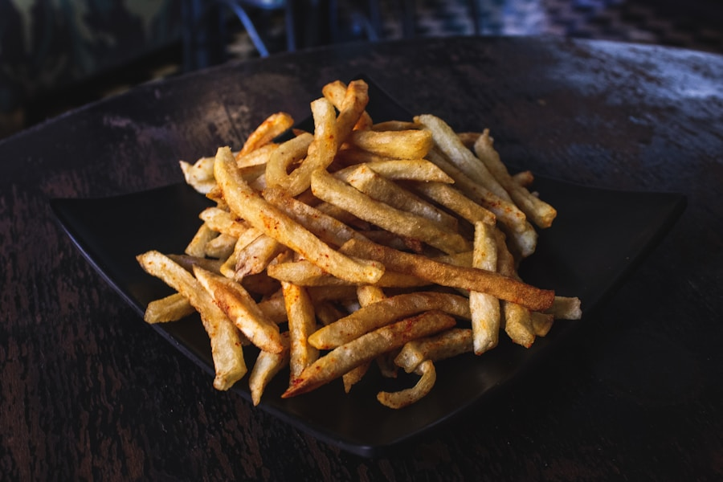
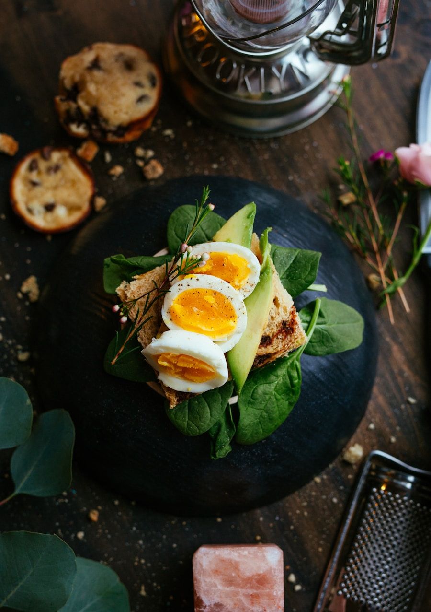

First Must-Try
Zibo BBQ
Flatbread, grill, and dipping sauce form the most iconic Zibo flavour symbol — an essential first stop for every visitor.

This is not just skewers on a grill — it is a deeply interactive city street-food experience

The charm of Zibo BBQ lies in the “cook it, wrap it, dip it yourself” format. Each table has its own charcoal stove; cooked skewers are slid off the stick, wrapped in a thin flatbread together with scallions and the signature sauce, then eaten in one bite. This interactive style of dining turns every table into a party.
What's more, Zibo's fame isn't just about flavour — it's the city's sincere response to its visitors: dedicated shuttle buses, organised BBQ districts, and city-wide coordinated hospitality. This warmth made many visitors “come for the BBQ, leave with a great impression of Zibo.”
This section is not a normal scroll — as you scroll down, the food cards spread out horizontally
Flatbread, grill, and dipping sauce form the most iconic Zibo flavour symbol — an essential first stop for every visitor.

Ingredients are layered and slow-cooked over low heat until meltingly tender. This is the most nostalgic New Year showstopper in every Boshan family.

Thin, fragrant, and crispy are the three defining qualities of Zhoucun sesame flatbread — each bite delivers a satisfyingly clean, audible crunch.
Deep-fried tofu is hollowed out, filled with a three-delicacies stuffing, and topped with a rich sauce — crispy outside, tender inside; a classic Shandong banquet centrepiece.

Savoury meat encased in flaky pastry layers — best eaten hot. A breakfast staple that locals have loved since their school days.

Wholesome grain pancakes carry a rustic aroma; once rolled with scallions and sauce, they produce the most distinctively Shandong everyday flavour.
Follow this pace and you will have tasted the defining flavours of Zibo
Arrive in Zibo and check in at Zhangdian. Head straight to the BBQ district in the evening, start with the classic three-piece set, and get your first proper taste of this city's street-food spirit.
Head to Boshan in the daytime. Focus on the Susu pot, stuffed tofu box, and a ceramic or glass craft experience — connecting “food” and “craft” to feel the local way of life.
Spend the last day at Zhoucun Ancient Commercial City. Pick up sesame flatbreads as souvenirs, then close the trip with a laid-back session of local snacks.